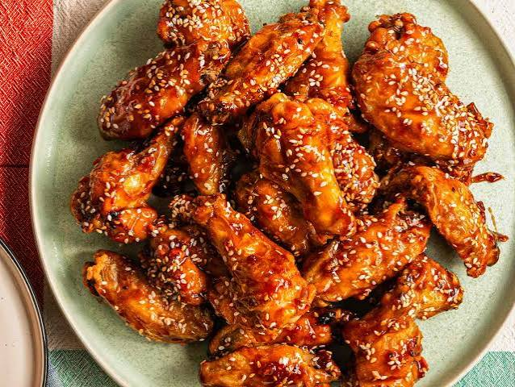

Wings

Description
Chicken wings are a game-day classic:crispy baked or fried wings tossed in a tangy buffalo sauce and served with celery and ranch or blue cheese dressing. They're easy to make and great for sharing.
Ingredients
- 2 lbs chicken wings
- 1 tbsp baking powder (not baking soda;it makes the skin crispy)
- 1 tsp salt
- 1/2 tsp black pepper
- 1/2 tsp garlic powder
- 1/2 cup hot sauce (like Frank's Redhot)
- 1/4 cup butter, melted
- Celery sticks
- Ranch or blue cheese dressing
Steps
- Preheat the oven to 425F.Line a baking sheet with foil and set a wire rack on top.
- Pat the wings completely dry with paper towels.
- In a large bowl,toss the wings with baking powder,salt,pepper, and garlic powder until evenly coated.
- Arrange the wings in a single layer on the rack,leaving space between them.
- While they bake, whisk the hot sauce and melted butter together in a large bowl.
- Toss the hot wings in the sauce until coated.
- Serve with celery sticks and ranch or blue cheese dressing.